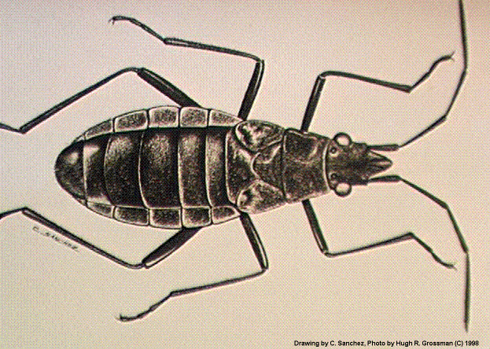

Mauna Kea's Wekiu Bug
From the Hawaiian Volcano Observatory:
"'Wekiu'"
is
the
Hawaiian word for top or summit. This
name was
given
to Mauna Kea's tallest cinder cone, which
reaches
13,796
feet in elevation and is the highest in the
Hawaiian
archipelago.
Life on the Mauna Kea summit must
endure
freezing
temperatures, winter snow falls, and,
occasionally,
hurricane-force winds. The centers of the
summit
cones
on Mauna Kea are permanently frozen to just
a few feet
below
the surface. Only lichens and some
mosses grow
scattered on the tops of rocks. Until recently
these cold
stone
fields were thought to be devoid of
resident
animal
life.
An unusual
new
bug was first discovered in 1980 by
biologists
searching
for insects under stones on Pu`u
Wekiu.
Although
known to scientists as Nysius wekiuicola,
this "seed
bug"
in the family Lygaeidae was given the
common name
"wekiu bug" to highlight the unusual location
where these
insects live. As their familiar name implies,
most seed
bugs
feed on seeds by piercing their straw-like
mouth parts
into the inner seed tissue and sucking it out.
However,
since
no native seed-bearing plants live in the
summit area
of Mauna Kea, it was clear to biologists that
these
insects
must be tapping into a different food source
than their
close
relatives.
Entomologists
studied the ecology of the wekiu bug to find
out how it
could
survive in such an extreme and hostile
environment.
Unlike their seed-feeding relatives, the wekiu
bugs
consume
other dead and dying insects that get carried
upslope by
winds
and deposited at the summit. The bugs
search
under
rocks and across ash flows for fresh,
wind-blown
carcasses.
They then use their piercing
mouth-parts
to puncture the exoskeleton of their prey and
suck out
the
juices inside.
Wekiu bugs
are
nearly one quarter of an inch long with
long, thin
legs.
Young bugs are dark brown with red
abdomens,
while
the adult bugs are a more uniform dark
brown to
black
color. Like all other true bugs, the young
have only
small
developing wing pads. The adults,
however,
never
develop full wings. Having extremely
reduced
wings
may be an advantage to an insect that sneaks
its way
through
rocks and ash. Besides, flying at the summit
of Mauna
Kea
can send a bug on a long trip.
The bugs
share
their summit home with other arthropods,
including
spiders
and caterpillars. Each has found its own
way of
dealing
with the extreme cold found at this
elevation.
Wolf
spiders hunker down under rocks that have
been
absorbing
the sun's heat during the day. Moth
caterpillars,
like many other types of insects, have a sort of
antifreeze
in
their bodies that prevents ice crystals from
forming in
their
cells. The wekiu bug also can endure
subfreezing
temperatures with a natural antifreeze in its blood
but also
has
a dark body to absorb warmth from the sun and
simultaneously
protect
it from ultraviolet radiation.
Until
recently
the wekiu bug was known only from the three
cones at
the
summit of Mauna Kea. Construction of
observatories
at the summit of Mauna Kea raised concerns
that the
wekiu
bug may be in jeopardy of losing its only
known
habitat.
So the search began to find more bugs on
Mauna Kea
and
the slopes of Mauna Loa. Individuals have
now been
observed
on cinder cones nearly three miles from
the Mauna
Kea
summit, while a previously unknown
species was
discovered on Mauna Loa.
The Mauna
Loa
bug, Nysius aa, was first captured in 1985
but not
described
as a different species until 1998. The life
style of
this
bug appears to be very similar to that of its
sister
species,
the wekiu bug, but subtle differences in its
appearance
make
it clear that this is not the same species.
Similar
species
have not been observed from Hualalai or
Haleakala,
but
maybe they just haven't been found yet."